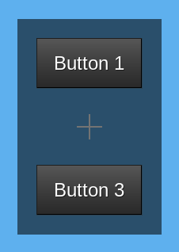

Experimental features
These features might be broken in the future. Popovers are also experimental, and have their own page.
no_prepend
Games and mods can add extra content to the start of every form shown to a player with player:set_formspec_prepend(), for example to give all forms the same background or style. This is called a "prepend", and it can be why a form has a background or style you did not expect.
You can set no_prepend = true on the "root" element to stop prepends from being applied to a form.
Example:
local my_gui = flow.make_gui(function(player, ctx)
return gui.VBox {
no_prepend = true,
gui.Button { label = "Button 1" },
-- Hidden and disabled, but its space is kept
gui.Button { label = "Button 2", visible = false },
gui.Button { label = "Button 3" },
}
end)

The hidden second button has nothing to do with no_prepend: it only shows that a hidden element still takes up space, see Hiding elements.
bgcolor
You can set bgcolor = "#123", fbgcolor = "#123", and bg_fullscreen = true on the root element to set background colors:
bgcolor: The color of the background of the form itself.fbgcolor: The color of the fullscreen background, which covers the whole screen behind the form.bg_fullscreen: Which of the two colors to draw.false(the default) only drawsbgcolor,trueonly drawsfbgcolor,"both"draws both, and"neither"draws neither.
bg_fullscreen = true can look backwards: it does not add the fullscreen background to the form's own one, it switches to the fullscreen one. Flow passes these three values straight to Luanti's bgcolor[] formspec element, so Luanti decides what is drawn. This also means that fbgcolor is not drawn unless you set bg_fullscreen to true or "both".
Colors that you leave out are not changed. See Functional Elements for how colors are written.
gui.VBox {
-- Draw a dark form on a dimmed screen
bgcolor = "#222222",
fbgcolor = "#00000080",
bg_fullscreen = "both",
gui.Label { label = "Hello world!" },
}
Window position
These values allow the position of the displayed form to be moved around and adjust how it is scaled. You will likely need them for most HUDs, which are described in Using a form as a HUD.
Example:
local my_gui = flow.make_gui(function(player, ctx)
return gui.VBox {
-- window_position is the point on the screen where the form is
-- placed, and window_anchor is the point on the form that is put
-- there. For both, 0 is the top/left and 1 is the bottom/right, and
-- the default is {x = 0.5, y = 0.5} (the center).
-- You probably want to set `window_position` and `window_anchor` to
-- the same value.
-- This puts the form in the bottom-right corner.
window_position = { x = 1, y = 1 },
window_anchor = { x = 1, y = 1 },
-- Minimum space to leave around the form, as a fraction of the
-- screen size (here 10% on the left/right and 20% at the top/bottom).
-- If the form is too big, it will be scaled down. 0 lets the form
-- touch the edge of the screen and negative values let it go off
-- the edge.
-- Default for forms: {x = 0.05, y = 0.05} (i.e. 5% of screen size)
-- HUDs default to a hardcoded pixel size, if you want them to roughly
-- line up with formspecs then you may explicitly specify this.
window_padding = { x = 0.1, y = 0.2 },
gui.Label { label = "Hello world" },
}
end)
Rendering to a formspec
This API should only be used when necessary and may have breaking changes in the future.
Luanti describes menus with formspec strings (see the introduction), which flow normally generates and shows for you. Some APIs in other mods, such as sfinv (see Using a form as an inventory), expect formspec strings instead. You can use this API to embed flow forms inside them. To use flow with these mods, you can call form:render_to_formspec_string(player, ctx, standalone).
- A complete formspec starts with a
formspec_version[]element (the version of the formspec language it uses) and asize[]element (the size of the form). By default these aren't included in the returned formspec, and are returned in a third value instead: a tableinfowithwandh(the size of the form, in the units described in Sizes) andformspec_version(the version number). Setstandaloneto include them in the returned formspec string. The third return value will not be returned. - Returns
formspec, process_event[, info].info.formspec_versionis always 7, whatever the player's client supports. Pass the samectxagain when you redraw so the form keeps its values. - Call
process_event(fields)with thefieldstable that Luanti passes tocore.register_on_player_receive_fieldscallbacks. It returnstrueif the formspec should be redrawn, whererender_to_formspec_stringshould be called and the newprocess_eventshould be used in the future. This function may return true even if fields.quit is sent.
Warning: Do not use this API with node meta formspecs (formspecs that are stored in the metadata of a node), it can and will break!
Embedding a form into another form
You can embed form objects inside others like this:
local gui = flow.widgets
local other_form = flow.make_gui(function(player, ctx)
return gui.Label { label = "I am embedded" }
end)
local parent_form = flow.make_gui(function(player, ctx)
return gui.VBox {
gui.Label { label = "Hello world" },
other_form:embed {
-- Current versions of flow ignore this. Older versions (from
-- before 2025-06-17) need it.
player = player,
-- A name for the embed. If this is specified, the embedded form
-- will get its own context (accessible at ctx.my_embed_name) and
-- field names will be rewritten to avoid conflicts with the
-- parent form. If name is not specified, the embedded form will
-- share ctx and ctx.form with the parent, and will not have field
-- names rewritten.
name = "my_embed_name",
},
}
end)
Special characters (excluding - and _) are not allowed in embed names.
Running code when a form is closed
gui.Container, gui.HBox, gui.VBox, and gui.Stack elements support an on_quit callback which gets run when a player closes a form (for example by pressing Escape or clicking an exit button).
Note that this function is not called in some cases, such as when the player leaves without closing the form or when another form/formspec is shown.
This function must not return anything, behaviour may get added to return values in the future.
local my_gui = flow.make_gui(function(player, ctx)
return gui.VBox {
on_quit = function(player, ctx)
core.chat_send_player(player:get_player_name(), "Form closed!")
end,
}
end)
If multiple on_quit callbacks are specified in different elements, they will all get called.
Handling enter keypresses in fields
gui.Field and gui.Pwdfield support an on_key_enter callback that gets called if enter is pressed:
local form = flow.make_gui(function(player, ctx)
return gui.VBox {
gui.Field {
label = "Press enter!",
name = "field",
on_key_enter = function(player, ctx)
core.chat_send_player(player:get_player_name(),
"Field value: " .. dump(ctx.form.field))
end,
-- Pressing enter does not close the form by default. You can
-- specify close_on_enter to close it when enter is pressed.
-- This only applies to gui.Field.
close_on_enter = true,
},
}
end)
Notes:
- If you're using this callback, please make sure there's some other way to trigger the enter action (like a button) so that the form works on older flow versions, and in case this API is replaced by a better one in the future.
- If you want recent mobile clients to call this callback when editing text, add
enter_after_edit = trueto the field definition. Without it, pressing "Done" on the on-screen keyboard of an Android device does not count as pressing enter. This is experimental. - The similarly named
on_eventgets called whenever the client submits the field to the server, which could be at any time, and is not very useful, but is still supported for compatibility (and there may be uses for it, such as sanitising field values). Be careful not to accidentally use the wrong callback.
Getting a reference to the current player and context
If you're making a custom widget, it might be useful to get a reference to ctx and player so you don't have to pass them in manually.
local function HelloWorld(def)
local ctx, player = flow.get_context()
return gui.Label {
label = "Hello, " .. player:get_player_name() .. "!\n" ..
"some_value=" .. ctx.some_value,
style = def.style,
}
end
local form = flow.make_gui(function(player, ctx)
ctx.some_value = 123
return HelloWorld { style = { font_size = "*2" } }
end)
flow.get_context() will error when called outside a build function (as you should not normally do this).
gui.Flow container
gui.Flow is a fixed-width container that wraps items around if they don't fit. Unlike other elements, you must specify a width, and some options like min_w and padding aren't supported.
This is similar to GTK's FlowBox, but with a lot fewer features.
The width also has to leave room for the spacing between elements. spacing has the same default as for gui.VBox (0.2, see also Padding). Flow needs w to be at least 1 + 0.2 + 1 + 0.2 + 1 (3.4) to fit three 1-wide elements on one row, and at least 4.6 to fit four, so 3 * (1 + 0.2) (3.6) is a safe width for three.
gui.Flow {
-- Fits 3 items, including the default spacing
w = 3 * (1 + 0.2),
gui.Image { w = 1, h = 1, texture_name = "default_mese_crystal.png" },
gui.Image { w = 1, h = 1, texture_name = "default_mese_crystal.png" },
gui.Image { w = 1, h = 1, texture_name = "default_mese_crystal.png" },
gui.Image { w = 1, h = 1, texture_name = "default_mese_crystal.png" },
gui.Image { w = 1, h = 1, texture_name = "default_mese_crystal.png" },
}